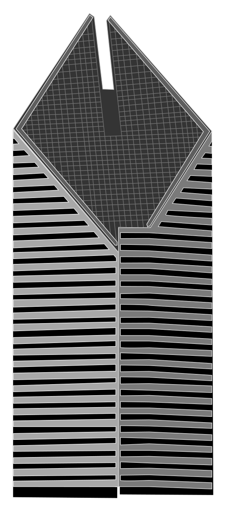

A stylized shape study. The façades, roof, and depth are modeled in 3D; proportions and hidden sides are approximate.
Camera moves only when you interact or start the turntable.
Chicago skyline / building study 01
150 North Michigan Avenue · the diamond roof

A stylized shape study. The façades, roof, and depth are modeled in 3D; proportions and hidden sides are approximate.
Camera moves only when you interact or start the turntable.